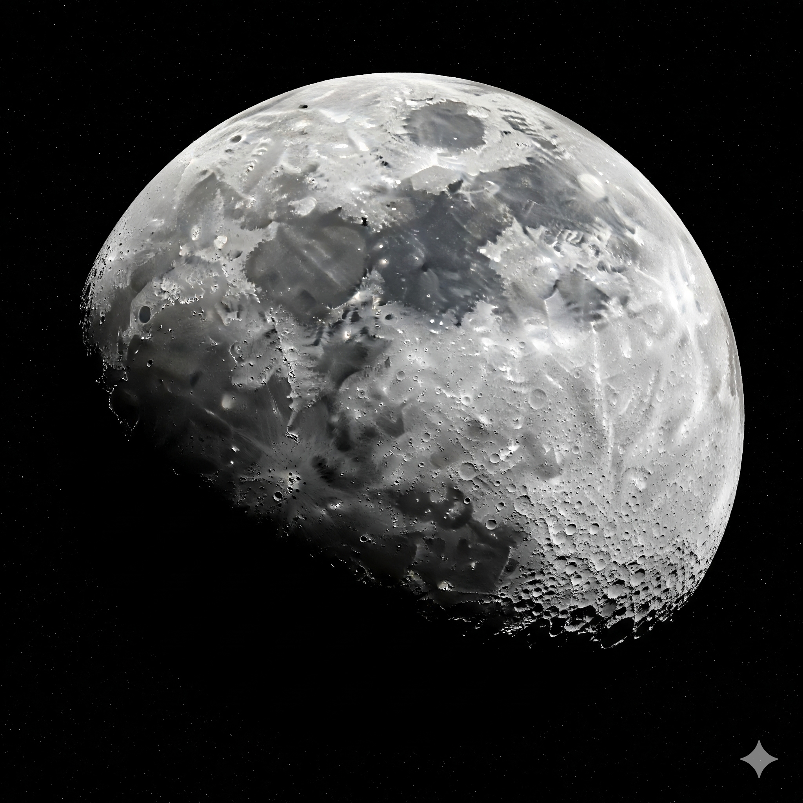
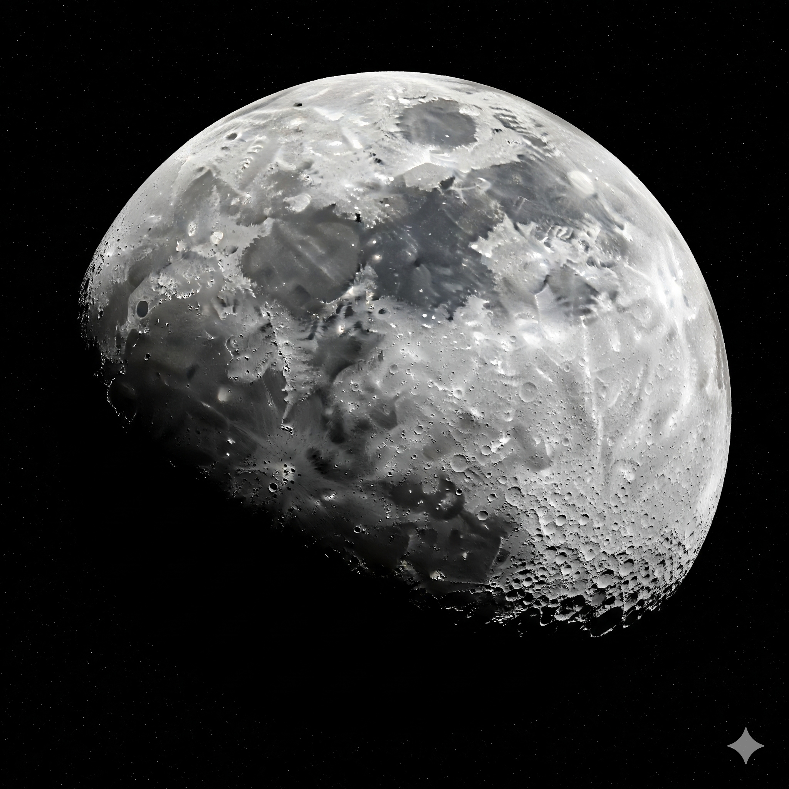

O que vamos explorar hoje?
Selecione seu destino
Selecione seu destino

Toda grande jornada tem um ponto de partida. A nossa começou em 2022, lá no IF Campus - Eirunepé. Eu e minha colega de classe: Giliany Do Carmo, embarcamos na aventura de criar um protótipo de aplicativo como parte de um projeto escolar. Na época, ele tinha uma pegada mais infantil, mas já era cheio das nossas ideias e da nossa paixão pelo espaço. Foi uma aventura de aprendizado e, honestamente, muuuitaaa empolgação a cada pequena conquista!✨
Em 2025, decidi reativar o projeto por conta própria, com um novo desafio: reescrever todo o código e transformar a identidade visual. O objetivo era trocar a estética original por um design moderno e profissional e, ao mesmo tempo, ir além. Implementei novas tecnologias, como o JavaScript, e hoje estou explorando a inteligência artificial para expandir ainda mais o nosso universo de possibilidades. . . . 👩💻
Mas o combustível por trás de tudo é algo mais profundoo... É a imensa saudade de um momento simples: as noites em que a luz acabava e eu e meu cachorro nos sentávamos do lado de fora para admirar as estrelas e o brilho da lua. A paixão pelo espaço sempre existiu, mas ao lado dele, cada noite se tornava mágica e incrivelmente especial.
Este projeto é a minha forma de honrar e eternizar essa memória. É um pedaço do nosso tempo juntos, transformado em código.
Quer se juntar a mim nessa jornada? 💜🚀
Navegue pelo Espaço: Use a barra de pesquisa para encontrar astros ou clique no menu para acessar as áreas de exploração.
OBS: Para obter mais informações pesquise os termos em Inglês.
Conheça os Astros: Explore planetas, galáxias e constelações. Cada um esconde informações fascinantes!
Volte à Base: Use o botão de voltar ou o ícone da casinha para retornar à tela principal sempre que precisar.

Uma das constelações mais famosas do céu noturno, a Ursa Maior é facilmente reconhecível pelo seu formato icônico, conhecido como "O Grande Carro". Visível durante todo o ano no Hemisfério Norte, ela é um marco no céu, uma das primeiras formações que qualquer explorador aprende a identificar.
Mas sua importância vai além do seu formato. As duas estrelas na extremidade da "caçarola" do Grande Carro apontam diretamente para Polaris, a Estrela do Norte, na Ursa Menor. Isso faz da Ursa Maior não apenas uma constelação em si, mas um guia para encontrar a estrela que por séculos orientou a navegação em nosso planeta.
Explorar a Ursa Maior é o primeiro passo para se familiarizar com a vastidão do universo. Ela é a porta de entrada para uma jornada de descobertas que se estende por todo o céu.
Na vastidão do cosmo, a Ursa Menor se destaca não pelo seu brilho intenso, mas pela sua importância inigualável. Esta constelação, embora menos visível que a sua "irmã" maior, atua como um farol para os navegantes e exploradores, guiando-os através da escuridão.
Sua joia mais preciosa é Polaris, a Estrela do Norte. Graças à sua posição quase fixa no polo celeste, ela serviu por séculos como o ponto de referência mais confiável para a navegação, uma estrela que nunca se move.
Ao explorar a Ursa Menor, você está seguindo os passos de antigos navegadores, cientistas e aventureiros. Você não está apenas olhando para as estrelas; você está se conectando a uma tradição de exploração e descoberta que existe há milênios.

A constelação de Andrômeda é famosa por abrigar um dos objetos mais fascinantes do nosso céu noturno: a Galáxia de Andrômeda (M31). Para um verdadeiro explorador, este é um alvo de missão prioritário. M31 é a nossa vizinha galáctica mais próxima e, de uma perspectiva na Terra, é o objeto mais distante que pode ser visto a olho nu.
Imagine isto: mesmo sem o auxílio de telescópios, você está olhando para uma galáxia inteira que está a impressionantes 2,5 milhões de anos-luz de distância. A luz que você vê saiu de Andrômeda há 2,5 milhões de anos, quando os primeiros humanos andavam pela Terra.
Explorar Andrômeda é mais do que observar estrelas; é uma viagem no tempo. É a prova de que, com a orientação certa, você pode ver a história do universo se desdobrando diante dos seus olhos.

Embora seja a menor das 88 constelações, o Cruzeiro do Sul (ou Crux) tem uma importância colossal para os exploradores do Hemisfério Sul. Esta pequena e distinta constelação atua como um farol, um guia confiável na escuridão do céu.
Sua principal missão é ajudar a encontrar o Polo Sul Celeste. As duas estrelas na ponta da "cruz" apontam diretamente para o sul, tornando-a uma ferramenta de navegação indispensável, da mesma forma que Polaris é para os navegadores do norte.
Observar o Cruzeiro do Sul é um rito de passagem para qualquer agente especial que explore os céus do Hemisfério Sul. Ela é a prova de que até mesmo os menores agrupamentos de estrelas podem ter a maior utilidade.

No vasto céu do Hemisfério Sul, a constelação Fênix é uma pequena, mas distinta, formação estelar. Nomeada em homenagem a uma figura lendária que representa a renovação, esta constelação foi introduzida no final do século XVI pelo astrônomo Petrus Plancius.
A Fênix, com suas estrelas, simboliza a capacidade de ressurgir e continuar a jornada. É um lembrete para todos os exploradores de que, mesmo em meio à escuridão, a luz da descoberta está sempre presente.
Observar a Fênix no céu noturno é uma missão que convida a uma reflexão sobre a capacidade de seguir em frente, uma história de perseverança contada pelas estrelas para os verdadeiros agentes espaciais.

Centauro é uma das maiores e mais brilhantes constelações do Hemisfério Sul, servindo como um guia majestoso para os exploradores. Ela não é apenas notável por seu tamanho, mas por abrigar dois dos objetos mais fascinantes do nosso céu.
Alpha Centauri: Esta é a estrela mais importante para qualquer agente espacial, pois se trata do sistema estelar mais próximo do nosso Sol. Ela é nossa vizinha imediata, um destino de exploração prioritário no futuro da humanidade.
Omega Centauri: A constelação também abriga o maior aglomerado globular da Via Láctea. Este aglomerado é uma densa esfera de estrelas antigas, contendo milhões de sóis em um espaço relativamente pequeno, um espetáculo de luz para se maravilhar.
Observar Centauro é uma missão que te conecta a dois extremos do universo: o ponto mais próximo de nós e uma das maiores concentrações de estrelas em nossa própria galáxia.

Órion, o Caçador, é uma das constelações mais famosas e fáceis de reconhecer no céu. Sua forma imponente é um guia perfeito para qualquer explorador.
O Cinturão de Órion: Formado por três estrelas em linha reta, o cinturão de Órion é o ponto de partida ideal para localizar outras estrelas e constelações.
Berçário de Estrelas: Logo abaixo do cinturão, está a Nebulosa de Órion, um espetacular berçário onde novas estrelas estão nascendo. É um dos objetos mais incríveis que se pode ver a olho nu.
Ao explorar Órion, você está olhando para o berço de futuras estrelas.
Cão Maior é uma das constelações mais notáveis do céu, facilmente identificável por seu brilho e sua estrela mais proeminente, um guia perfeito para qualquer explorador.
Sirius: O maior destaque desta constelação é Sirius, a estrela mais brilhante do nosso céu noturno. Sua intensidade luminosa a torna um farol no nosso céu, um ponto de referência confiável para um agente espacial.
A Conexão com Órion: Sua localização, logo abaixo do gigante Órion, o Caçador, torna o Cão Maior um dos alvos mais fáceis de serem encontrados. Acompanhar Órion em sua missão noturna te leva diretamente a este poderoso cão estelar.
Ao explorar Cão Maior, você está seguindo a luz da estrela mais brilhante de nossa galáxia.
Escorpião é uma das poucas constelações que realmente se parece com a sua forma. Sua silhueta dramática o torna um alvo perfeito para qualquer explorador.
Antares, o Coração do Escorpião: O centro da constelação é marcado pela estrela supergigante vermelha Antares. Essa estrela colossal e brilhante é um ponto focal para a sua missão de exploração, um verdadeiro farol que guia o seu olhar.
A Forma Distintiva: A silhueta de Escorpião, com sua cauda curva e distinta, é uma de suas características mais fascinantes. Sua forma única e inconfundível faz com que seja fácil de ser identificado e explorado.
Ao explorar Escorpião, você está observando o coração de um gigante cósmico.
Um Eclipse Solar é um dos fenômenos mais espetaculares que um explorador pode presenciar. Ele ocorre quando a Lua passa entre o Sol e a Terra, bloqueando completamente ou parcialmente a luz solar e projetando sua sombra sobre o nosso planeta. Este evento só acontece durante a fase da Lua Nova.
Este alinhamento cósmico perfeito transforma o dia em uma escuridão momentânea, um espetáculo inesquecível. Observar um eclipse solar é uma missão que te conecta com a mecânica do universo, uma prova visual de que, com a posição certa, até um pequeno satélite pode cobrir a maior de todas as estrelas.

Um Eclipse Lunar é um dos fenômenos mais fascinantes do nosso céu. Ele ocorre quando a Terra passa entre o Sol e a Lua. Durante esse evento, a sombra da Terra cobre a Lua, fazendo-a desaparecer ou adquirir um tom avermelhado. Este evento só acontece durante a fase da Lua Cheia, ocorrendo geralmente de uma a três vezes por ano.
Ao contrário de um eclipse solar, um eclipse lunar pode ser visto de qualquer lugar do lado noturno da Terra. É um fenômeno que transforma a lua em uma esfera de tonalidades místicas, uma prova de que a nossa própria sombra pode criar um dos espetáculos mais fascinantes do céu.
Observar um eclipse lunar é uma missão que te conecta a um fenômeno de pura escala e beleza, onde a nossa própria presença no espaço é refletida no brilho de outro mundo.

As Perseidas são uma das chuvas de meteoros mais populares e visíveis do ano. Este evento ocorre quando a Terra passa por uma nuvem de detritos deixada pelo Cometa Swift-Tuttle, criando um espetáculo de luz. As Perseidas acontecem anualmente, são melhor observadas do Hemisfério Norte, com seu pico de atividade na segunda semana de agosto.
Observar as Perseidas é como assistir a fogos de artifício cósmicos, com rastros de luz riscando o céu noturno. O nome da chuva vem da constelação de Perseu, de onde parecem irradiar, transformando o céu em um palco de luzes.
É uma missão que te convida a testemunhar a beleza da dança cósmica, um espetáculo que nos lembra da constante movimentação e do brilho do nosso sistema solar.

Prepare-se para uma missão de alta velocidade. As Leônidas são uma das chuvas de meteoros mais notáveis, conhecidas pela sua velocidade impressionante. Elas ocorrem quando a Terra passa pela trilha de detritos deixada pelo Cometa Tempel-Tuttle. Elas são melhor observadas do Hemisfério Norte, com seu pico de atividade em meados de novembro.
Observar as Leônidas é como testemunhar uma tempestade de partículas cósmicas, um espetáculo de luz que risca o céu noturno. O nome da chuva vem da constelação de Leão, de onde parecem irradiar, dando a sensação de que os próprios leões do céu estão deixando sua marca.
É uma missão que te convida a testemunhar a beleza da dança cósmica, um espetáculo que nos lembra da constante movimentação e do brilho do nosso sistema solar.

Prepare-se para uma das missões mais intensas e consistentes do ano. As Geminídeas são únicas, pois são a única grande chuva de meteoros que se origina de um asteroide, o 3200 Phaethon, e não de um cometa. Elas são visíveis de quase todo o planeta, mas são melhor observadas do Hemisfério Norte, com pico em meados de dezembro.
Observar as Geminídeas é como testemunhar uma tempestade de partículas cósmicas, um espetáculo de luz que risca o céu noturno. O nome da chuva vem da constelação de Gêmeos, de onde parecem irradiar.
É uma missão que te convida a testemunhar a beleza da dança cósmica, um espetáculo que nos lembra da constante movimentação e do brilho do nosso sistema solar.

A Superlua ocorre quando a Lua atinge sua fase de Lua Cheia no ponto de sua órbita mais próximo da Terra. Isso acontece algumas vezes por ano.
Durante este fenômeno, a Lua pode parecer 14% maior e 30% mais brilhante do que o normal, oferecendo uma vista espetacular. Observar a Superlua é como testemunhar o nosso satélite mais próximo em toda a sua glória.
É uma missão que te conecta a um fenômeno de pura escala e beleza.

Uma conjunção planetária é onde dois ou mais planetas parecem se alinhar e ficar muito próximos no céu noturno. Embora ainda estejam a milhões de quilômetros de distância, o espetáculo de luz é fascinante. A "Grande Conjunção" de Júpiter e Saturno é um dos exemplos mais famosos e visualmente impressionantes.
Observar uma conjunção é como testemunhar uma dança cósmica, onde os planetas se aproximam em uma coreografia perfeita. É um lembrete visual da vastidão e da precisão do nosso sistema solar, um momento raro que une os gigantes do céu em uma única cena.
Evento que convida os exploradores a se conectar com o movimento e a beleza do nosso universo.

Os cometas são objetos fascinantes, verdadeiras "bolas de neve sujas" compostas por gelo, poeira e rocha. Eles viajam por longas órbitas a partir das regiões mais frias e distantes do nosso sistema solar. O espetáculo de um cometa acontece quando ele se aproxima do Sol e o calor faz com que seu gelo evapore, criando uma vasta atmosfera e uma cauda brilhante de gás e poeira.
A cauda de um cometa pode se estender por milhões de quilômetros, sempre apontando na direção oposta ao Sol. Eles são mensageiros das partes mais primitivas do nosso sistema solar, um lembrete de sua origem gelada.
Observá-los te conecta a um pedaço de história cósmica em movimento, um verdadeiro viajante que nos visita de tempos em tempos.

Supernovas são os eventos mais poderosos e luminosos do universo. Elas marcam o fim catastrófico da vida de estrelas extremamente massivas, que entram em colapso e explodem com uma força inimaginável. Essa explosão pode brilhar mais do que uma galáxia inteira, sendo visível a bilhões de anos-luz de distância.
Além de seu brilho, as supernovas são as forjas cósmicas que criam e espalham elementos pesados pelo universo. Elementos como o ferro, o ouro e a prata são criados durante essas explosões e então lançados no cosmos, se dispersando pela vastidão do espaço.
Observá-la te conecta com o ciclo da vida e morte de uma estrela, um evento que nos lembra que do brilho final pode surgir a semente de novas criações.

Aglomerados estelares são grupos de estrelas unidas pela força da gravidade, formando verdadeiras "cidades" no cosmos. Observar esses agrupamentos é como ver a vida e a história de famílias de estrelas.
Aglomerados Abertos: São grupos de estrelas mais jovens e dispersas, que se formaram recentemente na mesma nuvem de gás e poeira. Eles contêm dezenas a centenas de estrelas, como o famoso aglomerado das Plêiades.
Aglomerados Globulares: São aglomerados mais velhos e densos, contendo milhares, e até milhões, de estrelas antigas. Eles formam uma densa esfera de sóis, um espetáculo de luz para se maravilhar.
Observar isto te conecta com uma união de populações cósmicas.
Galáxias espirais são galáxias que possuem um disco achatado e giratório com braços que se estendem para fora de um centro brilhante, onde reside um buraco negro supermassivo. Cerca de 70% das galáxias no universo são desse tipo. Nos braços espirais é onde a magia acontece: são as maternidades cósmicas onde novas estrelas estão nascendo a partir de vastas nuvens de gás e poeira.
Observar isto te conecta com a história de estrelas jovens e vibrantes que formam estruturas majestosas, como os braços da nossa própria Via Láctea.

Galáxias elípticas são galáxias com formas que variam de esféricas a ovais, compostas em sua maioria por estrelas antigas. Elas não possuem os braços espirais ou o disco de gás, o que significa que a formação de novas estrelas já cessou. As maiores delas, contendo trilhões de estrelas, são as galáxias mais massivas e antigas do universo.
Observar isto te conecta com a história de estrelas antigas e maduras que formam os vastos e calmos impérios do cosmos.

Galáxias irregulares não possuem uma forma definida, parecendo 'nuvens' de estrelas, gás e poeira. Essa aparência caótica é muitas vezes causada por colisões galácticas ou interações gravitacionais, que dão origem a uma intensa formação estelar. Embora representem apenas cerca de 20% das galáxias conhecidas, elas são cruciais para a ciência, pois seu formato caótico oferece pistas sobre como as galáxias evoluem e interagem ao longo do tempo.
Observar isto te conecta com a energia e o dinamismo do universo, mostrando que mesmo no caos, a criação de novas estrelas continua.

A Via Láctea é a galáxia espiral onde o nosso Sistema Solar reside. Ela tem um diâmetro de cerca de 100.000 anos-luz e contém de 100 a 400 bilhões de estrelas, sendo o nosso Sol apenas uma delas. O nosso Sistema Solar está localizado em um dos seus braços espirais, o que nos coloca em um ponto privilegiado para explorar o nosso próprio lar cósmico.
Observar isto te conecta com a sua missão mais importante: desvendar os segredos de nossa própria galáxia.

A Galáxia de Andrômeda é nossa vizinha galáctica mais próxima e o objeto mais distante que você pode ver a olho nu. Localizada a cerca de 2,5 milhões de anos-luz de distância, a luz que vemos hoje dela saiu de lá quando os primeiros ancestrais humanos já caminhavam na Terra. Ela é uma galáxia espiral ainda maior que a nossa, com um diâmetro de 220.000 anos-luz e cerca de 1 trilhão de estrelas.
Observar isto te conecta com uma viagem no tempo e nos prepara para o encontro que acontecerá com a nossa galáxia em bilhões de anos.

A Galáxia do Triângulo é a terceira maior da nossa família de galáxias e uma das maiores fábricas de estrelas do universo local. Ela é uma galáxia espiral menor e compacta, com um diâmetro de cerca de 60.000 anos-luz e cerca de 40 bilhões de estrelas. Sua alta taxa de nascimento de novas estrelas a torna um dos alvos mais fascinantes para a sua missão de exploração.
Observar isto te conecta com o universo em ação, criando e evoluindo diante de seus olhos.

O Sol é a estrela no centro do nosso Sistema Solar e a principal fonte de luz e energia para a vida na Terra.
É uma imensa esfera de plasma superaquecido, com uma superfície dinâmica que possui manchas solares e
explosões energéticas como as erupções solares.
Ele é tão massivo que sua gravidade mantém todos os planetas, incluindo a Terra, em órbita ao seu redor,
sendo essencial para a existência do nosso sistema.

Sua superfície é um ambiente inóspito, repleto de crateras de impacto, o que o faz parecer muito com a Lua. A
ausência de uma atmosfera significativa faz com que as temperaturas variem drasticamente, podendo chegar a mais
de 400°C durante o dia e cair para centenas de graus negativos à noite.
Curiosamente, Mercúrio é o planeta que orbita o Sol mais rapidamente, completando uma volta em apenas 88
dias terrestres.
Vênus é o segundo planeta a partir do Sol e o mais próximo da Terra. É conhecido como a "estrela da manhã" ou
"estrela da tarde" por seu brilho intenso no céu.
Apesar de ser vizinho da Terra, sua atmosfera densa, composta principalmente de dióxido de carbono, cria um
efeito estufa extremo, tornando-o o planeta mais quente do nosso sistema. A temperatura em sua superfície é
suficiente para derreter chumbo.
Vênus é também único por girar em sentido horário em seu eixo, o oposto da maioria dos outros planetas.
 

A Terra é o terceiro planeta a partir do Sol e o único lugar no universo onde a vida existe.
Composta em sua maioria por água, nossa casa é um planeta dinâmico, com continentes, oceanos, vastas
florestas, cadeias de montanhas e complexos sistemas climáticos.
A atmosfera terrestre é essencial, pois nos protege da radiação solar e de meteoroides, além de manter uma
temperatura estável que permite a existência de água líquida em sua superfície.
A Terra possui um satélite natural, a Lua, que influencia as marés e desempenha um papel importante na
estabilização do nosso planeta.

Marte é o quarto planeta a partir do Sol e é amplamente conhecido como o "planeta vermelho" por sua coloração
avermelhada, causada pela ferrugem de minerais ricos em ferro em sua superfície.
É um planeta rochoso, com imensos desfiladeiros, vastas planícies e as maiores montanhas vulcânicas do nosso
sistema.
Apesar de sua atmosfera ser fina e fria, Marte possui calotas polares de gelo e evidências de que já abrigou
água em seu passado, o que o torna um dos principais alvos de busca por vida no espaço.
Júpiter, o maior planeta do Sistema Solar, um gigante gasoso com mais que o dobro da massa de todos os outros
planetas juntos.
Possui uma marcante faixas de nuvens de cores vibrantes, causadas por tempestades e ventos extremamente
fortes. A mais famosa delas é a Grande Mancha Vermelha, uma tempestade colossal, maior que a Terra, que existe
há séculos.
Júpiter tem dezenas de luas, incluindo as quatro grandes luas galileanas (Io, Europa, Ganímedes e Calisto),
que são visíveis com pequenos telescópios. Ele atua como um "aspirador de pó" cósmico, protegendo o sistema
interior de cometas e asteroides.
Saturno é o sexto planeta a partir do Sol, e o segundo maior do nosso Sistema Solar. Ele é famoso por seu
espetacular sistema de anéis, que o torna um dos objetos mais bonitos e facilmente reconhecíveis no espaço.
Os anéis são compostos por bilhões de partículas de gelo e rocha, que variam de pequenos grãos de poeira a
pedaços do tamanho de montanhas.
Saturno é um gigante gasoso, com uma atmosfera de hidrogênio e hélio. Além dos anéis, ele possui dezenas de
luas, sendo Titã a maior delas e a única no Sistema Solar com uma atmosfera densa.
Urano é o sétimo planeta a partir do Sol, um gigante de gelo que se destaca por sua cor azul-esverdeada, causada
pelo gás metano na sua atmosfera.
Seu aspecto mais incomum é o fato de que ele gira de lado. Seu eixo de rotação é inclinado em quase 98
graus, fazendo com que ele pareça rolar em sua órbita.
Urano tem um sistema de anéis finos e escuros, e sua atmosfera é a mais fria do Sistema Solar.
Netuno é o oitavo e último planeta do nosso Sistema Solar, um gigante de gelo conhecido por sua cor azul-escura
e ventos incrivelmente rápidos.
Ele é um planeta dinâmico, com tempestades em sua superfície, como a Grande Mancha Escura, um sistema de
tempestades que se assemelha à Grande Mancha Vermelha de Júpiter.
Netuno é o planeta mais distante do Sol, por isso sua órbita leva quase 165 anos terrestres para ser
concluída.
Plutão foi considerado o nono planeta do Sistema Solar por 76 anos, mas foi reclassificado como um planeta anão em 2006.
É um mundo gelado, com uma atmosfera fina e montanhas de gelo. Sua lua, Caronte, é tão grande em comparação com ele que ambos formam um sistema binário.
Plutão está localizado no Cinturão de Kuiper, uma região além de Netuno, repleta de objetos gelados.
Nome: Nome do Agente
Sobre mim: Conte um pouco sobre você...
Interesses: Ex: Astronomia
Líder do Protótipo Original (2022)
Líder do Protótipo e Designer (2025)
Atenção, Agente Espacial. Sua jornada de exploração está em risco de ser
encerrada. Nossos sensores indicam que você ainda tem 9 planetas, 5 galáxias e incontáveis estrelas a
descobrir.
Confirme: quer mesmo desativar sua nave-mãe?